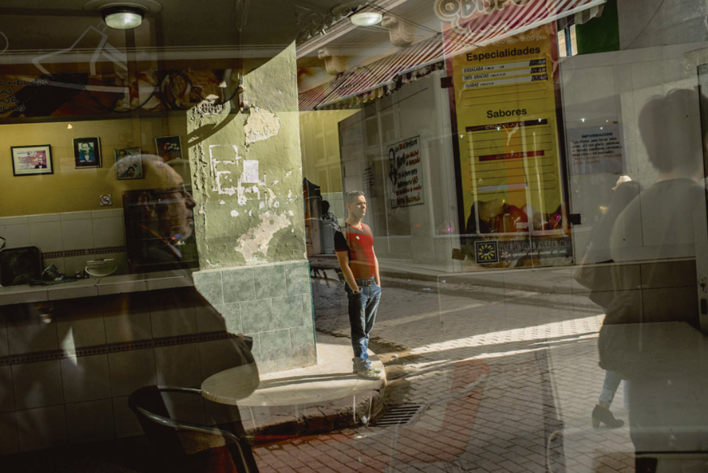

“Le futur de notre pays doit nécessairement être un futur d’hommes de science, d’hommes de pensée, parce que c’est précisément ce que nous semons ; nous semons des opportunités pour l’intelligence », proclama Fidel Castro, le 15 janvier 1960. En 1959, le pays comptait trois universités, contre plus de soixante aujourd’hui. Le taux d’alphabétisation a bondi d’environ 70 % à plus de 99 % en 2012 (derniers chiffres disponibles). Celui de l’île voisine, Haïti, stagne à 62 %1.
1 A l’occasion du 20ème anniversaire de la Société de Spéléologie Cubaine, Académie des Sciences. http://en.granma.cu/special-in-honor-of-fidel-s-90th-birthday/2016-08-12/a-talent-for-doing-the-impossible
2 Selon le Programme des Nations Unies pour le Développement.
3 Par exemple, sur la période 2007-2012, Cuba a investi 11.9% de son PIB dans l’éducation, ce qui constituait un record mondial.
Dorénavant, La Havane exporte des médecins et des chercheurs dans le monde entier (lire l’article d’Hernando Calvo Ospina page 52). Ces succès de Cuba dans le domaine biomédical s’expliquent en grande partie par les efforts de l’État en matière d’éducation publique (qui représentent plus de 10 % du produit intérieur brut2). Le pays fait aujourd’hui jeu égal avec les États-Unis en ce qui concerne l’espérance de vie (78,5 ans) et la mortalité infantile (5 pour 1 000)3. Les médecins constituent ainsi une véritable manne économique pour l’île (première source de devises, devant les envois d’argent et le tourisme).
Grâce à un accord conclu en 2000 avec le Venezuela d’Hugo Chávez, l’île a longtemps reçu jusqu’à cent mille barils de pétrole par jour (à prix subventionné) en contrepartie desquels plus de dix mille médecins et universitaires cubains travaillent sur le sol vénézuélien4.
4 Statistiques de l’Organisation Mondiale de la Santé, 2016.

Directeur du Cuban Neuroscience Center (CNEURO), à La Havane, le docteur Mitchell Valdés-Sosa, 67 ans, fut le témoin privilégié de l’histoire du développement des sciences cubaines. Exilé à Chicago sous la dictature de Fulgencio Batista (1952-1959), son père revint sur l’île en 1961 pour y exercer sa profession d’obstétricien et pallier l’exode d’une bourgeoisie médicale ayant fui la révolution5. Il assista donc à la création du Centro nacional de investigaciones científicas (CNIC, l’équivalent du Centre national de la recherche scientifique, CNRS) en 1965, et à l’arrivée des nombreux chercheurs et médecins envoyés par l’URSS de Leonid Brejnev ou par le Chili de Salvador Allende pour former la première génération de spécialistes locaux, ainsi qu’à la soutenance du tout premier docteur ès sciences de l’île en 1971. Au début des années 1980, la recherche cubaine s’éloigna du modèle soviétique, jugé trop centralisé, trop bureaucratique et trop rigide. Le pouvoir laissa de plus en plus d’autonomie aux chercheurs qu’il consultait fréquemment.
5 On estime que Cuba a perdu plus d’un tiers de ses médecins entre 1959 et 1961.
Au cours des années fastes ayant précédé la perestroïka et la « période spéciale », Valdés-Sosa et son frère Pedro ont contribué à certaines des réussites majeures qu’ont connues les neurosciences locales, comme la construction du premier système cubain d’imagerie cérébrale assistée par ordinateur ou la conception d’algorithmes de traitement des signaux neuronaux encore utilisés aujourd’hui.
Le budget de la recherche cubaine reste limité. C’est pourquoi le gouvernement promeut des circuits courts dans lesquels recherche fondamentale, recherche appliquée et chaînes de production se concentrent sur un même lieu. CNEURO regroupe par exemple des biologistes, des mathématiciens, des physiciens, des médecins impliqués dans divers essais cliniques ainsi que plusieurs techniciens spécialisés. Valdés-Sosa précise non sans fierté que CNEURO produit « chaque année quelques six mille prothèses et appareils auditifs permettant le diagnostic précoce de la surdité chez les très jeunes enfants ».
BioCubaFarma, la société publique qui regroupe l’ensemble des acteurs de l’industrie biomédicale, détient plus de deux mille brevets et exporte plusieurs centaines de produits différents vers le Brésil, le Vietnam, l’Afrique du Sud, le Venezuela, l’Algérie et l’Iran. Partenaire privilégié de Cuba, la Chine vient de recevoir l’autorisation d’ouvrir une société pharmaceutique sur le territoire cubain. Compte tenu du faible coût et de la bonne formation des professionnels de la santé à Cuba, les Canadiens sont également intéressés, tout comme certaines entreprises françaises.
Vaccin contre le cancer Depuis les accords de décembre 2014 ayant abouti à la réouverture de l’ambassade américaine à La Havane et à un réchauffement des relations entre les États-Unis et Cuba, deux molécules cubaines prometteuses font l’objet d’essais cliniques aux États-Unis : un vaccin contre le cancer du poumon et un médicament contre les gangrènes liées au diabète6. En retour, un assouplissement administratif devait permettre aux entreprises américaines d’exporter une gamme plus étendue de produits vers Cuba, jusqu’à ce que M. Donald Trump fasse marche arrière à Miami, le 16 juin 2017. Si le monde universitaire a accueilli avec enthousiasme ces accords qui jettent les bases d’une coopération scientifique entre les deux pays, le chemin à parcourir reste encore long. Washington n’oubliant jamais de rappeler que « Cuba est une dictature », le Congrès a récemment invoqué le Cuba Democracy Act (1992) pour imposer une clause contractuelle enjoignant aux pédiatres cubains de ne pas utiliser le matériel américain qu’ils reçoivent pour torturer leurs patients7… Ce qui n’a pas manqué de provoquer l’indignation des médecins et des chercheurs.
6 Cohen et al., 2015. Advancing neuroscience interactions with Cuba. Proceedings of the National Academy of Science (lien)
7 Voir l’article paru dans Science, qui mentionne notamment les difficultés préalables associées à l’exportation de matériel biomédical. http://www.sciencemag.org/news/2014/12/researchers-applaud-us-cuba-accord
Pour autant, malgré la vocation altruiste8 de la « médecine révolutionnaire » initialement promue par Ernesto « Che » Guevara, le dispositif scientifique cubain n’est pas exempt de contradictions. Les hommes en blanc sont souvent envoyés à l’étranger dans le cadre d’un service civique de deux ans, au cours duquel ils sont hébergés dans des camps particulièrement surveillés et ont obligation de ne pas quitter leur région d’affectation, sous peine de sanctions. Sans compter les mesures imaginées par Washington pour motiver les déserteurs en herbe9, dont la rémunération avoisine les 60 euros mensuels (ils perçoivent plusieurs centaines d’euros lorsqu’ils sont en mission à l’étranger).
9 Comme lorsque Cuba envoya plus de 400 médecins pour combattre l’épidémie d’Ebola sur le sol africain.
Outre les incertitudes liées aux réticences de l’administration Trump vis-à- vis du commerce et du tourisme américano-cubain, les espoirs consécutifs à l’ouverture du secteur biomédical sont « assombris par les difficultés financières », explique Pascal Belin, directeur de recherche à l’Institut des neurosciences de la Timone (INT), à Marseille. Belin, qui collabore depuis plus de dix ans avec ses homologues de La Havane, estime que les laboratoires cubains regorgent de « chercheurs talentueux qui feraient d’excellents éléments dans les établissements français », mais leur développement dépend, selon lui, de la mise en place de partenariats internationaux, axés notamment sur l’échange de compétences et de matériel. Sans parler de procédures d’émigration plus souples côté cubain.
Si l’INT a fait don à l’équipe du docteur Valdés-Sosa d’un appareil pour les électroencéphalogrammes, Belin souligne que d’autres pays sont en avance sur la France dans le domaine de la coopération avec Cuba. L’université de Maastricht (Pays-Bas), par exemple, a offert un scanner IRM d’une valeur de plusieurs millions d’euros à CNEURO et a créé un programme doctoral mixte qui lui permet notamment de bénéficier de l’expertise de Cuba en matière de neuro-imagerie dite « multimodale »10.
10 Combinaison de plusieurs mesures d’activités cérébrales simultanées, telles que l’électro-encéphalogramme et l’IRM
Afin de mieux prédire l’apparition et l’évolution de maladies neurodégénératives, telles qu’Alzheimer — de plus en plus fréquentes du fait du vieillissement de la population —, le gouvernement cubain a lancé en 2004 un vaste programme de recensement de tous les jumeaux de l’île. La quasi-totalité (95 %) d’entre eux ayant été répertoriés, plus de cent mille individus peuvent désormais être mobilisés pour l’étude de l’hérédité génétique et des interactions des gènes et de l’environnement, et ce dans l’un des pays les plus métissés. Dans le domaine spécifique des neurosciences cognitives, un partenariat à long terme avec Cuba offrirait la possibilité d’examiner en profondeur les différences interculturelles entre les pays européens et l’une des dernières sociétés communistes, ouvrant ainsi la voie à une meilleure compréhension des dynamiques complexes qui régissent le rapport entre structures sociales et comportements individuels.